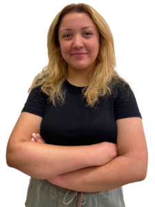

IEEE Women In Engineering (WIE) kadınları bilim, teknoloji, mühendislik ve matematik (STEM) alanlarında destekleyen uluslararası en büyük teknik meslek örgütüdür. Küresel ağ, 100’den fazla ülkedeki yaklaşık 20.000 üyeyi, hayatlarında ve kariyerlerinin her noktasında ilerletmek için birbirine bağlamaktadır. IEEE YTÜ WIE olarak hedefimiz; kadınların teknik disiplinlerde daha çok yer edinmesini sağlamak, küresel düzeyde işe alımına ve korunmasına yardımcı olmaktır. Kadın ve erkek üyelerimizin sektörde yeteneklerini kullanarak işbirliği içinde çalışması ve teknolojiyi daima bir adım öteye taşıması temel hedeflerimizdendir. Bu sebeple alanında uzman iş insanlarını okulumuz platformunda biz geleceğin mühendisleri ile buluşturuyor, daha yetkin ve bilinçli mühendisler olarak sektörde yer edinmeyi hedefliyoruz. IEEE YTÜ WIE, mühendislik alanındaki üyelerinin kendilerini ve başarılarını tanımasında yardımcı olmak, ödüllendirmenin yanında uluslararası alanda bir ağ oluşturmasını sağlamak ve üyeleri için çeşitli seminer ve etkinlik düzenlemek, bunun yanında bazı sosyal sorumluluk projelerini hayata geçirmek gibi amaçlar da edinmiştir. IEEE YTU WIE üyeleri samimi arkadaşlık bağları kurar, etkili mentörler edinir ve insanlığın yararına fark yaratır. IEEE YTU WIE sene içerisinde gerek sosyal gerek teknik her anlamda her yaştan insana hitap eder ve sektörde cinsiyet eşitliğini temel hedef olarak görür.
Women in Engineering Affinity Group
Etkinliklerimiz:
- Cafe WIE
- Star Projesi
- Women's Equality Summit
- Sosyal Farkındalık Gezileri
- Teknik Geziler

I. WES
 Seda KARATAŞ
- WIE BAŞKANI -
Seda KARATAŞ
- WIE BAŞKANI -

Mısra KARAKUŞ
- WIE BAŞKAN YARDIMCISI -